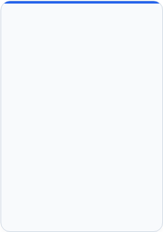

Haushaltsbudget
M Finance
Die intelligente, umfassende App, die alle Ausgaben, Einnahmen, Bankkonten und Kreditkarten an einem Ort zusammenführt. Vollständige Analyse der Vergangenheit, Kontrolle der Gegenwart und präzise Planung der Zukunft in einer zugänglichen Oberfläche.


M Solution Group


Datenbasierte Entscheidungen
Von Schätzungen zu Fakten - finanzielle Entscheidungen auf Basis realer Daten treffen, statt sich auf Erinnerung oder Bauchgefühl zu verlassen.
Zeit- und Aufwandsersparnis - drastische Reduzierung der manuellen Arbeit bei der täglichen und monatlichen Verfolgung von Ausgaben und Einnahmen.
Eine einzige Kontrollzentrale - Sammlung, Organisation und Darstellung aller monatlichen und jährlichen Finanzdaten an einem einzigen Ort.
Verfolgungsumfang - 360 Grad
Dokumentation der Vergangenheit - eine organisierte, vollständige Analyse aller bereits erfolgten Transaktionen auf Bankkonten und Kreditkarten.
Analyse der Gegenwart - eine aktuelle Echtzeit-Momentaufnahme der derzeitigen Aufteilung von Ausgaben und Einnahmen.
Blick in die Zukunft - interaktive Werkzeuge zur Planung von Monaten im Voraus, zur Aufteilung von Zahlungen und zur präzisen Cashflow-Prognose.
Volle Flexibilität - automatische Erkennung des Datenformats von Finanzinstituten im In- und Ausland.
Professioneller Fokus - das System konzentriert sich ausschließlich auf die Analyse und Darstellung von Informationen, ohne tatsächliche Bankgeschäfte wie Überweisungen oder Zahlungen durchzuführen
Zweck des Systems und Umfang der Tätigkeit
M Solution Group




Der Startbildschirm und das Eintrittserlebnis
Beim Betreten der App öffnet sich ein gestalteter Startbildschirm im Stil einer eleganten Schriftrolle mit einem Willkommensgruß in der gewählten Sprache und der Sprachflagge
Ein Klick auf den Bildschirm schließt das Tor und öffnet den gesamten Inhalt des Projekts
Ein mehrsprachiges System
Eine Reihe von Flaggen oben auf dem Bildschirm ermöglicht den sofortigen Wechsel zwischen 11 Sprachen per Knopfdruck
alle Titel, Beschriftungen und Systemmeldungen werden sofort mit einem Klick übersetzt, ohne dass Daten verloren gehen
Rücksichtnahme auf
Linkshänder
Ein bewegliches Bedienfeld rechts/links
Das Hauptbedienfeld ist immer sichtbar und verfügbar
Mit einem Klick auf einen Schalter unten im Panel kann es von rechts nach links verschoben werden und umgekehrt
Für den maximalen Komfort von Rechts- und Linkshändern
Künstliche Intelligenz (KI)
Intelligente, auf künstlicher Intelligenz basierende Algorithmen unterstützen bei Klassifizierung und Analyse
Eine spezielle KI -Anzeigeleuchte unten im Panel zeigt grün für verfügbar oder rot für nicht verfügbar
Die App verfügt über eine gewisse Fähigkeit, auch dann weiterzuarbeiten, wenn die KI künstliche Intelligenz nicht verfügbar ist
Benutzererfahrung, Zugänglichkeit und Mehrsprachigkeit
M Solution Group


Die Benutzeroberflächen-Schicht
Systemfront und Navigation:
Die Logik- und Geschäftsschicht
Die intelligente Verarbeitungs-Engine:
Die Datenbankschicht
Systemspeicher und -gedächtnis:
• Empfang von Befehlen und Auswahlen vom Bedienfeld
• Verwaltung eines klaren Mensch-Maschine-Dialogs
• Zugriff auf Ordner und Abrufen von Dateien
• Erkennung verschiedener Dateitypen
• Aufbau einer einheitlichen Kommunikationsschnittstelle
• Verwaltung der Datenbankanzeige
• Schaffung einer sicheren Testumgebung
• Lesen von Daten und Vermeidung von Duplikaten
• Kartierung der Struktur von Finanzinstituten
• Eine intelligente automatische Klassifizierungs-Engine
• Anwendung lokaler Klassifizierungsregeln
• Erstellung individueller Ansichten
• Eine Tabellenfabrik zur Berichtserstellung
• Speicherung globaler Einstellungen und Listen
• Laden und Speichern strukturierter Datendateien
• Verwaltung der Hauptdatenbankdatei
• Ein lernendes, sich selbst verbesserndes Klassifizierungsgedächtnis
• Speicherung der jährlichen und monatlichen Historie
Systemstruktur: Arbeitsschichten
M Solution Group


Flexible Lademöglichkeiten für den Kunden
Duplikatschutz und Kontofokussierung
Laden einer einzelnen Datei: Auswahl einer bestimmten, von der Bank oder Kreditkarte heruntergeladenen Datendatei.
Laden eines ganzen Ordners: gleichzeitiges Laden aller Datendateien in einem bestimmten Ordner.
Automatisches Laden: die Software lädt selbstständig alle Dateien, ohne dass eine separate Bestätigung für jede Datei erforderlich ist.
Integrierter Dateimanager: ein Klick auf "Laden" öffnet einen Dateimanager für eine einfache Auswahl.
Ein Duplikatschutzmechanismus: die Software erkennt bereits vorhandene Transaktionen und fügt sie nicht doppelt hinzu. Eine bereits geladene Datei kann beruhigt erneut geladen werden, ohne Sorge, dass sich die Zahlen "aufblähen".
Kontonummernerkennung: neben den Lade-Schaltflächen erscheint eine Beschriftung "Kontonr.", die automatisch aus den Daten ausgelesen wird.
Auswahl der anzuzeigenden Kontonummern: Kontrollkästchen ermöglichen die Auswahl der zu fokussierenden Konten und das Filtern von bis zu 4 verschiedenen Bankkonten gleichzeitig.
Datenladen, Duplikatschutz und Filterung
M Solution Group


Transparente Installation und Updates - Installation und Updates erfolgen vollständig transparent über die KeyClick-Website
der Kunde arbeitet immer mit der neuesten Version, ohne selbst aktiv werden zu müssen
Direkte Bankverbindung
Ein Klick auf die Schaltfläche "Finanzinstitut" führt zu den Bankdiensten. Dieser Dienst ermöglicht eine direkte, sichere Verbindung zu im System eingerichteten Finanzinstituten im In- und Ausland.
Download-Wege
Eine Option zum automatischen Herunterladen von Kontoauszugsdateien auf den PC zum manuellen Laden oder zum direkten Download in die App.
Sicherheit nach Bankstandard
Die Verbindung wird ausschließlich vom Kunden hergestellt, genau wie er es immer gemäß den Sicherheitseinstellungen der Bank tut. Unmittelbar nach dem Herunterladen der Daten wird gesperrt und getrennt.
Ein Erlebnis in einer fortschrittlichen Umgebung
Ein Erlebnis in einer intelligenten, fortschrittlichen technologischen Umgebung, das eine sichere und schnelle Nutzung des Informationsflusses ermöglicht.
Direkte Verbindung zu Finanzinstituten und Bankdiensten
M Solution Group


Die zentrale Tabelle und Datenanalyse
Eine breite Matrix: eine jährliche Darstellung
Spalten = Monate
Haupttabelle: Bilanz, Zusammenfassungen von Einnahmen und Ausgaben, vorheriger Saldo und Monatssumme
Zweittabelle: eine Klassifizierungstabelle. Jede Transaktion wird einer festen Liste von Kategorien zugeordnet. In dieser Tabelle zeigt jede Zeile die Summe für diese Kategorie.
Klassifizierungsdetails: bei Auswahl einer Klassifizierungszeile öffnet sich eine Detailtabelle für diese Kategorie.
Steuerelemente, Schalter und Export
Wichtige Steuerschalter oben im Bildschirm:
Zukunft einschließen
Schließt zukünftige Pläne und Daueraufträge in die Berechnungsprognose ein oder aus.
Kreditkarten einschließen
Kontrolle darüber, ob Kreditkartendetails in das Gesamtbild einbezogen werden.
Aktionsschaltflächen: Aktualisieren zum Neuladen der Daten, Exportieren zum Speichern der Tabelle als Tabellendatei oder druckbares digitales Dokument, sowie Schaltflächen zum Aktualisieren und Löschen.
Jährlicher Kontoauszug
M Solution Group


Auswahl von Jahr und Monat
Oben auf der Seite - verschiebt den Bildschirm auf den gewünschten Monat - eine Spalte aus dem Jahreskonto
Eine Ausgabenliste. Eine Klassifizierungsübersicht
Eine detaillierte Ausgabenliste für den gewählten Monat neben einer nach Kategorien sortierten Transaktionsübersicht
Zukünftige Einnahmen. Zukünftige Ausgaben
Eine fokussierte Anzeige aller geplanten und für diesen spezifischen Monat erwarteten Einnahmen und Ausgaben.
Saldoberechnung. Monatliche Bilanz
Berechnung des kumulierten Saldos neben einer abschließenden Zusammenfassung der monatlichen Bilanz. Tatsächliche Einnahmen gegenüber Ausgaben
Kreditkarten. Bankkonten
Eine Übersicht der Daten aktiver Kreditkarten und Bankkonten, unter Berücksichtigung der tatsächlichen Abbuchungstermine.
Monatlicher Kontoauszug
M Solution Group


Eine lernende Klassifizierungs-Engine und Systemgedächtnis
Automatische Organisation: die Software klassifiziert Transaktionen bei ihrer Erfassung nach vordefinierten Regeln.
Einfache, unkomplizierte Korrektur: auf dem Klassifizierungsbildschirm, einem nach Kategorien sortierten Kontoauszug, kann jede Klassifizierung geändert werden. Die Änderung wird im System vermerkt
Intelligentes Gedächtnis für zukünftige Ladevorgänge: wenn Sie die Klassifizierung einer Transaktion ändern, merkt sich das System die Auswahl und klassifiziert zukünftige Transaktionen mit ähnlicher Beschreibung automatisch.
Ein dedizierter Kreditmechanismus
Trennung von Kauf und Abbuchung: Behandlung der zeitlichen Lücke zwischen dem tatsächlichen Kaufdatum und dem Abbuchungsdatum auf dem Bankkonto.
Ratenzahlung: präzise Integration von Ratenzahlungen in das jährliche und monatliche Gesamtbild.
Eine zweistufige Kartenansicht: oben - eine Zusammenfassungstabelle aller Karten. Bei Auswahl einer Karte - öffnet sich eine untere Tabelle mit Details nach abbuchenden Händlern.
Intelligente Klassifizierung und dedizierte Behandlung von Kreditkarten
M Solution Group


Die Karte zur Definition zukünftiger Transaktionen
Auf dem Bildschirm "Zukünftiges Konto" verwalten Sie bekannte Ausgaben und Einnahmen
im Voraus - Daueraufträge, Abonnements, erwartete Zahlungen; für jeden Posten enthält die Bearbeitungskarte:
Verwaltungsschaltflächen - Aktualisieren, Neu, Bearbeiten, Zurücksetzen, Löschen und Duplizieren bestehender Zeilen.
Automatische Verteilung und Integration in Berichte
Vorwärtsverteilungsberechnung - sobald ein Startdatum und die Anzahl der Zahlungen festgelegt sind, verteilt die Software den Betrag über alle relevanten Monate hinweg.
Dynamische Integration - zukünftige Daten werden automatisch in den jährlichen und monatlichen Kontoauszug integriert, wenn der Schalter "Zukunft einschließen" aktiviert ist.
Laufende monatliche Aktualisierung - die Möglichkeit, zukünftige Posten jederzeit entsprechend Änderungen der finanziellen Realität zu aktualisieren, zu ändern oder zu löschen.
• Quelle, Bank und Kontonummer
• Transaktionsklassifizierung, Beschreibung und Freitextnotiz
• Definition als Einnahme oder Ausgabe
• Startdatum und geplante Anzahl der Zahlungen
Zukunftsplanung - Budgetprognose
M Solution Group


Der Kontoauszug in grafischer Ansicht
Eine visuelle Darstellung aller Finanzdaten in grafischer Form.
Wählen Sie einen beliebigen Posten aus und erhalten Sie sofort eine jährliche grafische Darstellung dazu.
Ein lebendiger Budget-Kuchen – interaktive Regulierung
Ein einzigartiges Werkzeug zur Planung eines ausgeglichenen Budgets - die Ausgabenscheiben werden direkt auf dem Einnahmenkuchen liegend dargestellt.
Live-Regulierung - eine Tabelle neben dem Kuchen enthält intelligente Regler, mit denen Sie die Scheibenwerte manuell erhöhen oder verringern können.
Erreichen des Gleichgewichts - eine Echtzeitsimulation, die untersucht, wie eine Änderung in einem Posten zu einem vollständig ausgeglichenen Budget führt.
Schaltflächen - Aktualisieren, Zurücksetzen, Neu laden.
• Bilanzdiagramme und Saldotrends im Zeitverlauf
• Ausgaben- und Einnahmendiagramme nach Zeiträumen
• Eine fokussierte Ansicht nach Kategorie oder einzelnem Posten
• Dedizierte Diagramme für Zukunftsplanung und Kreditkarten
Grafische Ansichten und der lebendige Budget-Kuchen
M Solution Group


Ein festes dreischichtiges Nachrichtenboard
Am unteren Bildschirmrand befinden sich während der gesamten Arbeit ständig 3 getrennte Nachrichtenboards:
• Systemmeldungen: laufende Updates zu im Hintergrund ausgeführten Aktionen.
• Anleitungsmeldungen: Tipps, Anleitung und Echtzeit-Anweisungen zur Durchführung von Aktionen.
• Fehlermeldungen: klare Warnungen bei einer Störung oder einer ungültigen Datei.
Verfügbare Schaltflächen: Löschen von Nachrichten oder Exportieren von Nachrichten in eine externe Datei.
Zurücksetzen, Neustart und Beenden
Wenn der Kunde von vorne beginnen möchte
gibt es zwei separate, sichere Zurücksetzen-Schaltflächen:
• Datenbank zurücksetzen: löscht alle in die Datenbank geladenen Transaktionen.
• Klassifizierungen zurücksetzen: löscht die für Transaktionen gelernten und festgelegten Klassifizierungsregeln.
• Beenden-Schaltfläche: ein geordnetes, sicheres Verlassen der App unter Speicherung aller Daten.
Nachrichtenboards, Systemreset, Schließen und Beenden
M Solution Group

M Finance
Ein Haushaltsbudget-Verwaltungssystem
Das Ihnen die perfekte finanzielle Kontrolle gibt
M Solution Group